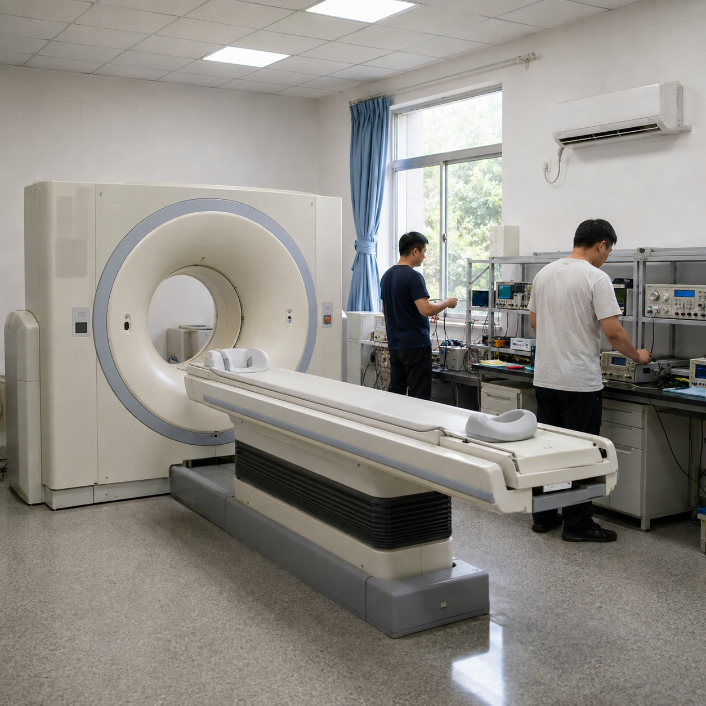

所有新闻





数字PET产业化工作迎来新进展。近日，临床全数字PET/CT（DigitMI 9120）获得国家三类医疗器械注册证，正式获准进入市场。


近日，位于武汉的数字PET产业化单位锐世医疗与蒙古国第四医院正式签约，实现了临床全数字PET医疗设备的首台海外销售...

来源：人民网－湖北频道小字号近日，由华中科技大学数字PET团队开发、型号为DigitMI 930的新一代全数字PET/CT日前通过中国医疗器械注册认证，正式获准进入市场...

7月19日，世界知识产权中小企业全球奖在瑞士日内瓦世界知识产权组织（WIPO）总部举行了颁奖典礼，全数字PET产业转化团队瑞派宁公司获此殊荣，成为全球仅有的5个获奖者之一。

在2021年“湖北青年五四奖章”表彰名单中，华中科技大学生命科学与技术学院数字PET援鄂医疗队入选，成为15个获奖集体之一...

员 杨亚4月8日记者从华中科技大学获悉，由该校谢庆国团队发明的全球首款临床全数字PET，去年6月在湖北省鄂州市中心医院投入试运行以来，这台“火眼金睛”的“癌症预警机”为数百名患者提前“揪”出了癌症病灶，走完从研发成果到临床应用的艰难创新过程，实现了国产创新医疗仪器从0到1的跨越式发展...

由中国科学院、中国工程院主办，中国科学院学部工作局、中国工程院办公厅、中国科学报社承办，中国科学院院士和中国工程院院士投票评选的2019年中国十大科技进展新闻、世界十大科技进展新闻，1月11日在京揭晓...

第01版）本报记者 刘志伟 通讯员 杨 亚近日，国家药品监督管理局在网上公布了《准产批件发布通知》，“正电子发射及X射线计算机断层成像扫描系统”（以下简称全数字PET）赫然在列...

华中科技大学谢庆国教授团队发明的全数字PET/CT，日前已通过国家药品监督管理局注册审批，获得市场准入和对外销售资质...

国际工程技术领域权威期刊《Sensors》在线发表中国科学家、华中科技大学教授谢庆国团队最新研究成果，题目为《一种用于质子治疗监测的正电子发射断层成像系统...

专访：我成了到中国参加尖端科研的“活广告”——访德国研究生尼古拉·米勒 新华社记者张毅荣 “我现在成了学校的‘活广告’，校方和我都希望有更多同学选择到中国参与国际尖端科技...

从华中科技大学数字PET团队传来消息，建立于意大利的数字PET莫里塞研究中心于本月正式迎来第一个博士生—27岁的意大利人埃马努埃莱（Emanuele），他将于今年9月到华中科技大学攻读博士学位...

北京时间4月1日，从瑞士日内瓦国际发明展上传来好消息：华中科技大学选送7个项目参加2017年日内瓦国际发明展，获得6金1银的满贯成绩...

■最新发现与创新 科技日报武汉4月27日电 （记者刘志伟 通讯员王潇潇）对病人做全身检测仅需5分钟，耗时仅需要传统设备一半左右...

医疗器械创新在中国 “探测无形的射线，把它变成PET图像、变成辐射数据；产业化无形的知识和技术，让它真正为社会服务...


华中科技大学教授谢庆国带领科研团队，成功研发出世界首台数字化正电子发射断层成像仪（PET）...